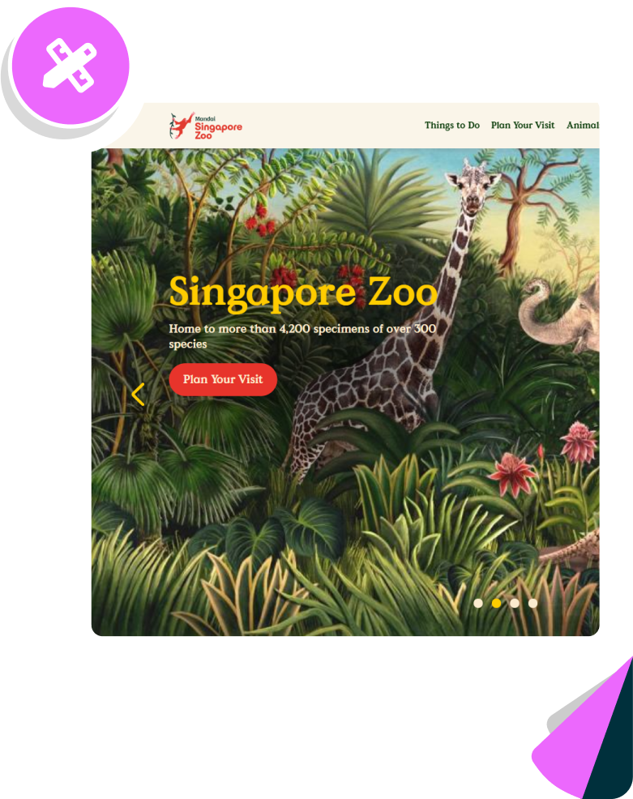
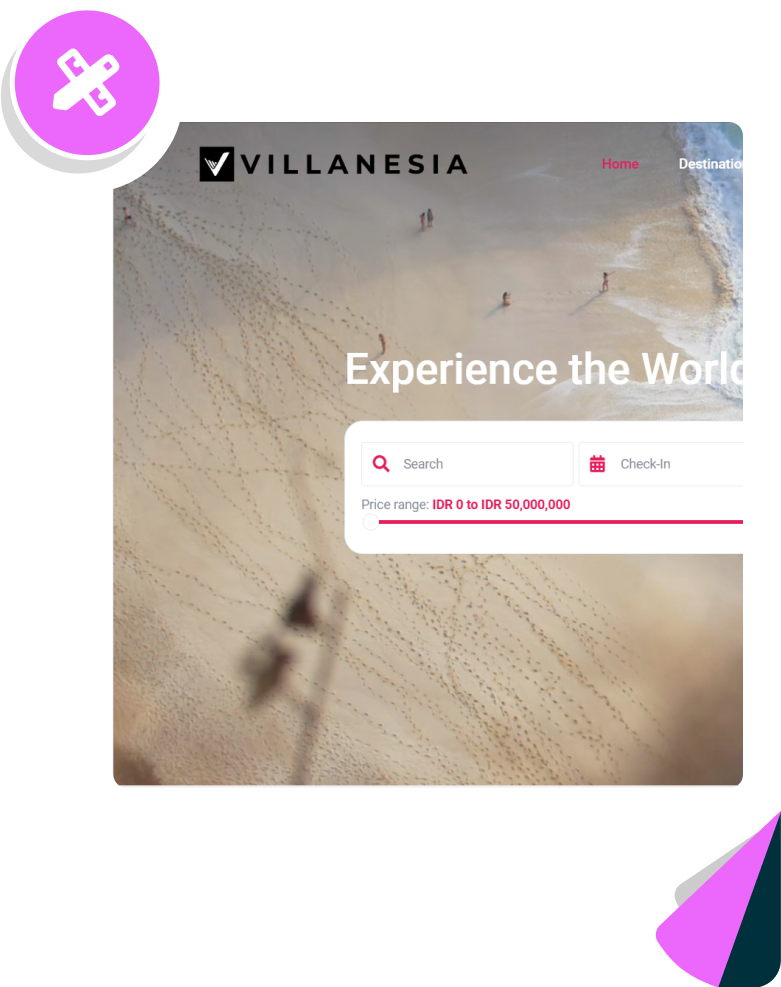
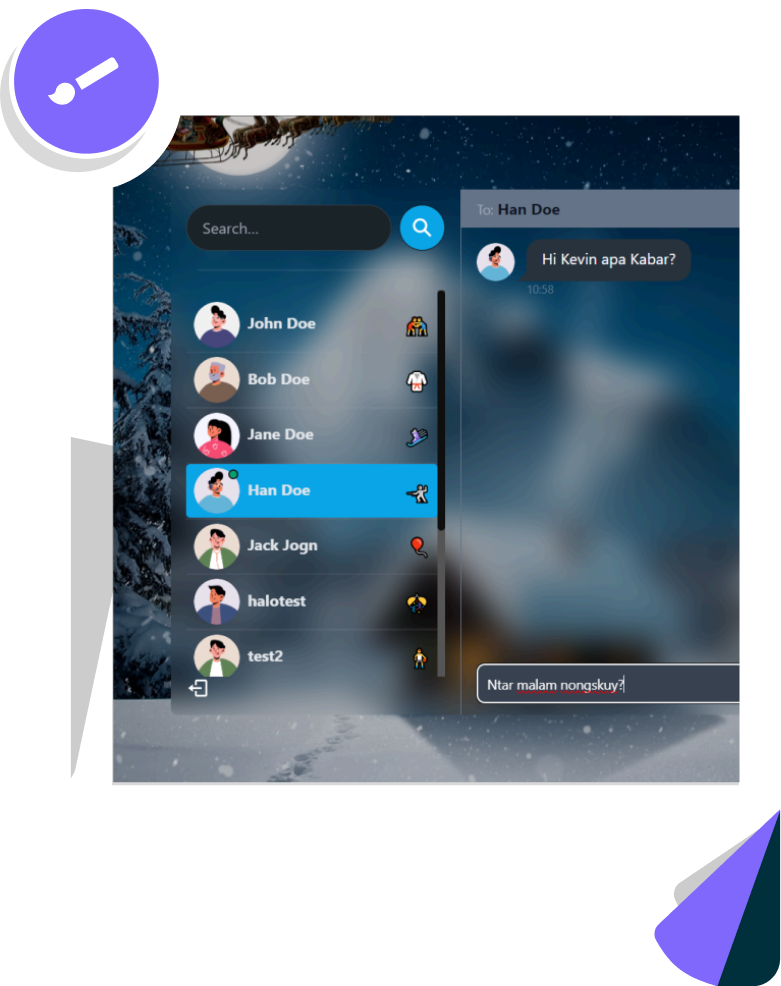
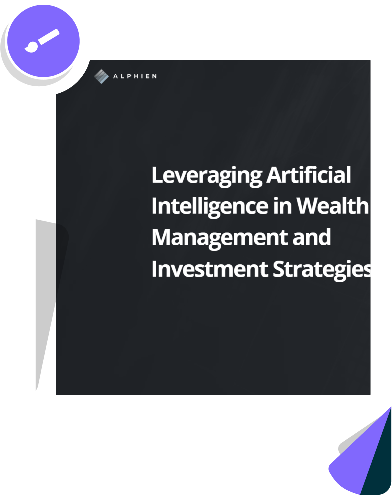

Clarify the task
Define users, decisions, states, and success conditions.
 Start a build
Start a build
Bali software house
We turn repeated tasks, messy handoffs, and scattered spreadsheets into web apps, dashboards, booking tools, and product websites.
What changes after the build
fewer manual steps clearer handoffs screens people understandprocess
We start with the job users need to finish, then design the shortest path through the product.
Define users, decisions, states, and success conditions.
Turn the task into screens, hierarchy, and interaction rules.
Develop the interface, data paths, responsive behavior, and edge states.
Adjust copy, layout, and logic before release.
services
For teams outgrowing manual coordination or one-size-fits-all software.
selected work

Designed for daily stock checks, status review, and internal decisions.



start with a brief
Send the current process, a rough screen, or the tool your team has outgrown. We will suggest the first build scope.
Send the brief